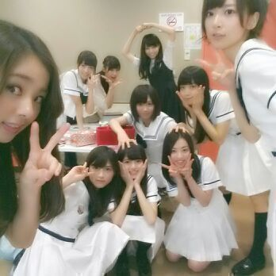
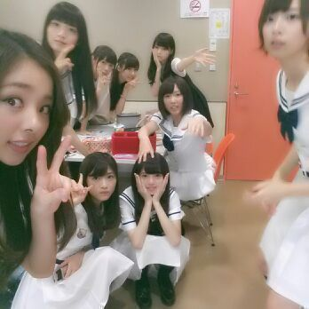
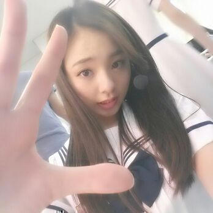
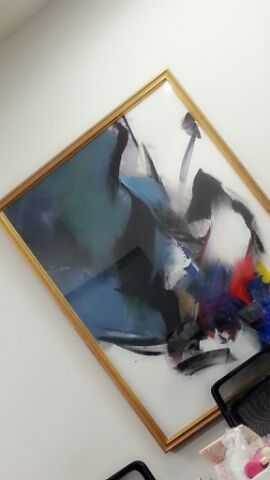

は---い ☆
ろってぃ-だよ-- \( ´∀｀)/
今日の20時45分に撮った写メだよー 。
ちゃんと時間覚えてるんだよ あはは。笑
皆でー。

実は↑これは成功した方で
1回目 失敗した方がこれ・・・

ななみんが急いで駆け寄ってきて
間に合わず、
らりんのポーズもおもちろい〜(^-^)
今日はとあることを
撮ってきました(^-^)/
ひみとぅ。
まひろの手☆ ぱw！わら

ぃぇい ♪
昨日は１日、
NOGIBINGO!の収録をやってました！！
またまた 楽しいことしてきましたよ☆
楽しいとゆうか
めっちゃくちゃ緊張して
震えたなぁ〜(*^^*)
え？何がどう震えたとかどーかは
まだ言えないよっと。ヨット。
楽しみにしててくださあい(*´ω｀*)/
あっ、あと
NOGIBINGO!見てたくさんの方が
コメントしてくださり嬉しいです！
ありがとうございます！
今度 まいまいとカラオケに行くお。
せっちゃん、体調大丈夫かなあ？ 心配。
来週もしオフがあれば
teamDで 楽しむ。
この画は 何を表してるんだろう？

こうゆうの まひろ気になるねんな。
見てしまう。
こんな大きいわりに
誰も見てくれてなくて
もっと存在感出したったら
いいのに...(´・ω・) って思った。
おやすみなさい。
ろってぃ〜( ＾∀＾)のし